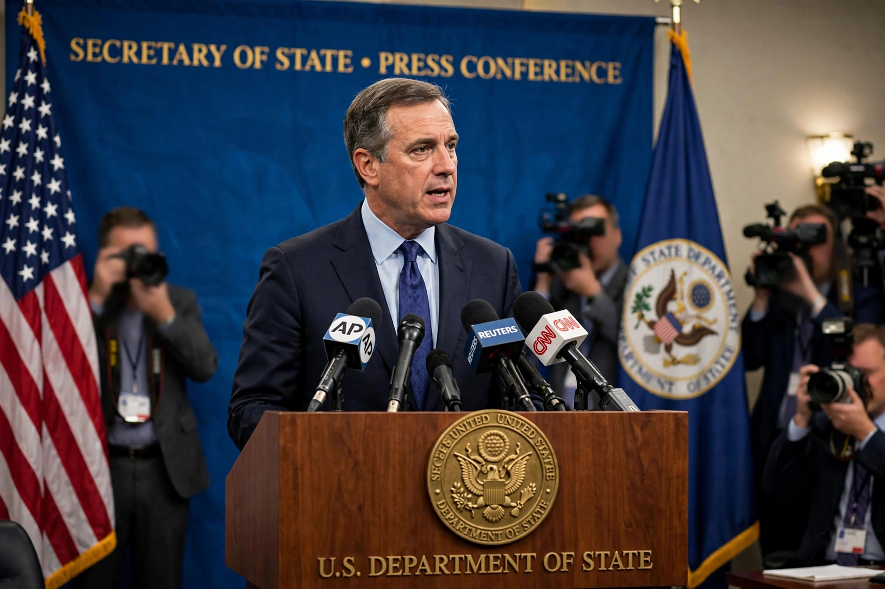

Secretary of state is a title held by senior government officials in many countries, with duties that vary widely by jurisdiction. In the United States, the Secretary of State is the head of the Department of State and the nation's chief foreign affairs officer. In the United Kingdom, a Secretary of State is a cabinet minister in charge of a government department, such as the Foreign Secretary or Home Secretary.

In US state governments, a secretary of state is usually an elected official responsible for elections, business registrations, and state records. In France, a secrétaire d'État is a junior minister. In the Vatican, the Cardinal Secretary of State is effectively the prime minister of the Holy See and head of its diplomatic service. Historically in England, the office grew from the king's principal secretary; by the eighteenth century there were secretaries for the Northern and Southern Departments, forerunners of the Foreign and Home Offices.